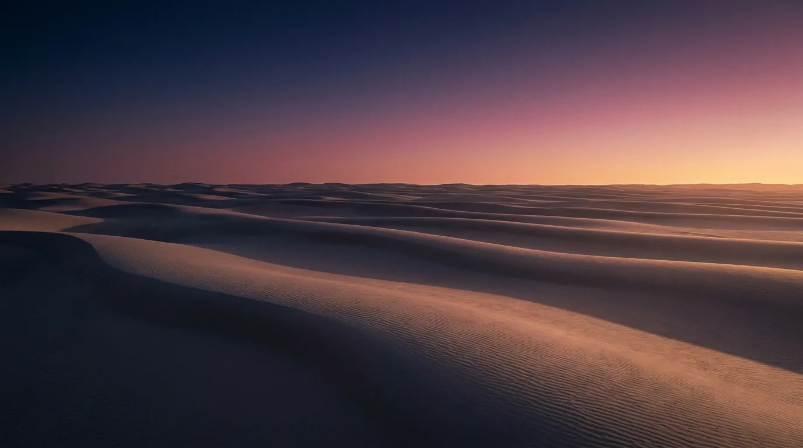
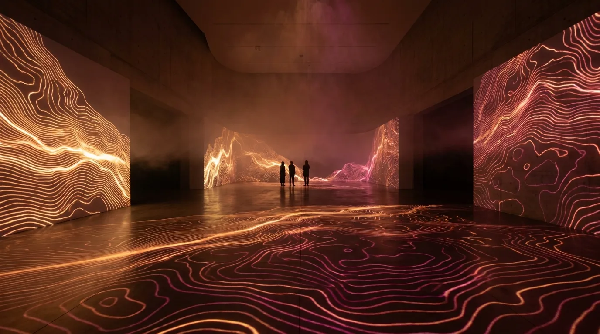
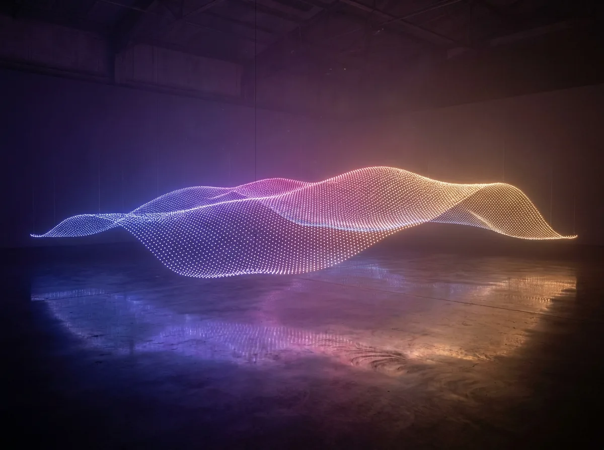
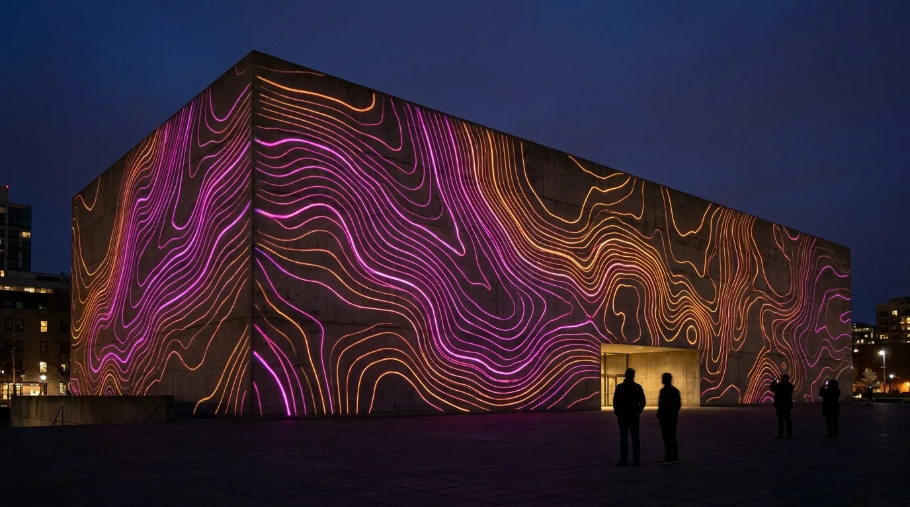

即時運算 ・ 沉浸投影
流丘・夜間光之地景
為當代美術館跨年特展打造的環形沉浸空間。三十公尺的弧形牆面上,生成式的沙丘稜線隨著一段虛擬的日落緩緩位移,觀者行走其間,腳步聲被轉譯為地表的細微漣漪。
生成式地景 ・ 沉浸式裝置
丘壑 STRATA 是一間台北的新媒體藝術工作室。我們以即時運算、投影 mapping 與互動感測,將山的稜線、水的波動與風的紋理,重新生成為一片片流動的光之地景,讓觀者不只是觀看,而是踏進其中。
理念
我們相信,最動人的數位影像並非憑空而生,而是對自然秩序的再翻譯。地層的層巒、沙丘的脊線、潮汐的進退——這些丘壑之形蘊含著時間累積的節奏。丘壑 STRATA 以程式化的方式,把這些節奏抽取出來,讓它們在即時運算的畫面裡重新呼吸。
對我們而言,一件沉浸式裝置不是一塊巨大的螢幕,而是一個會回應人的場域。當觀者走近、停留、伸手,光的地景也隨之起伏改變。科技在這裡退到幕後,留下的是一種安靜而遼闊的感受:像是站在黃昏的山稜上,看見光從遠方緩緩漫過來。
作品
從美術館展間到城市建築立面,我們以光與運算,在不同尺度的空間裡生成屬於該地的丘壑。

即時運算 ・ 沉浸投影
為當代美術館跨年特展打造的環形沉浸空間。三十公尺的弧形牆面上,生成式的沙丘稜線隨著一段虛擬的日落緩緩位移,觀者行走其間,腳步聲被轉譯為地表的細微漣漪。

互動感測 ・ 地面投影
以紅外線感測捕捉觀者位置,地面的等高線會如水波般避開、再聚攏,讓人以身體「畫」出一張不斷變形的地圖。

動態雕塑 ・ LED 矩陣
一萬兩千枚可定址光點懸吊成一面起伏的曲面,以海潮資料驅動,將遠方港口的即時浪高,化為展廳裡緩慢呼吸的光之潮汐。

建築光雕 ・ 投影 mapping
為城市藝術節設計的開幕之作。我們以建築立面為畫布,讓一層層山巒自地面生長、漫過整棟建築,最後化為漫天星塵。十五分鐘的循環,沒有一刻完全相同。
服務
從概念到落地,丘壑 STRATA 提供一條龍的沉浸式體驗設計與工程整合。
環形投影、地面互動、多投影機融接的整合設計,為美術館、品牌旗艦與常設展打造可走入的光之場域。
立面光雕、地標光節、城市藝術季開幕製作,從建模對位到內容生成,完成大尺度的戶外光之敘事。
以資料、聲音或現場感測驅動的即時運算影像,讓每一場演出與每一次走訪,都是獨一無二的版本。
從敘事主軸、動線規劃到技術選型,陪伴品牌與機構把一個抽象的概念,長成一個完整的沉浸式體驗。
流程
實地丈量空間的尺度與光線,並與你深談這次想留給觀者的感受。一切從理解地貌開始。
以程式建立地景的運動模型,快速產出多版動態原型,在運算的可能性裡篩選出最對的那一種起伏。
投影對位、感測佈點、結構與電力整合,把螢幕上的地景準確地落進真實的空間裡。
開展前逐幀校色與互動微調,展期間提供穩定的遠端監控與現場支援,讓地景始終流動。
聯絡
無論是一場展演、一面建築立面,還是一個還很模糊的念頭,我們都樂於聆聽。留下訊息,丘壑 STRATA 會在兩個工作天內回覆。